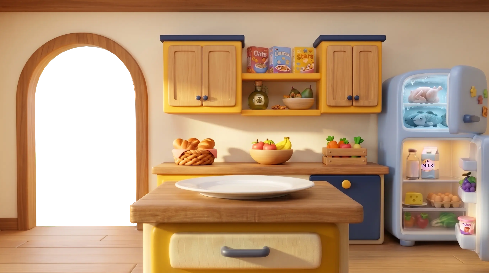
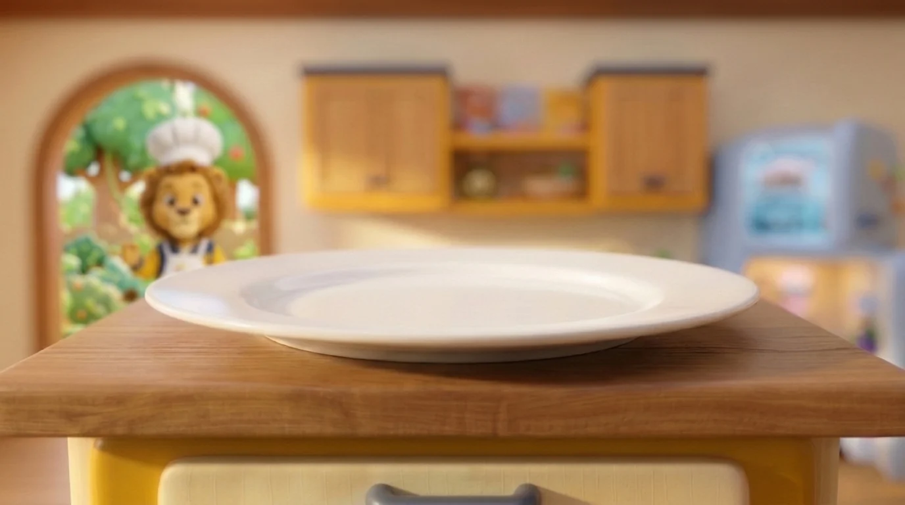

🍗
Proteínas
i
🥛
Lácteos
i
🌾
Carbohidratos
i
🌾
Carbohidratos
i
🍎
Frutas
i
🥦
Vegetales
i
💧
Grasas Saludables
i
🥦
Vegetales
i
🍽️
¡A cocinar!
✨

La cocina mágica de
Yellow
★
Sonido
Pantalla
Ayuda
📖
Modo exploración
Descubre los 6 grupos alimenticios
Mi plato mágico
✨
0 de 3
＋
Toca un grupo para elegir ingredientes
Volver a la cocina
Añade ingredientes por grupo
🍗
Proteínas
Músculos
🥛
Lácteos
Calcio
🌾
Carbohidratos
Energía
🍎
Frutas
Vitaminas
🥦
Vegetales
Fibras
💧
Grasas
Saludables
👆
Toca un grupo alimenticio para aprender
✨
★ ★ ★
Receta completada
¡Desayuno Campeón listo!
¡Bravo, chef! Yellow está muy orgulloso de ti.
Cocinar otra vez
Otra receta
🔄
Gira la pantalla para cocinar en grande
Activa JavaScript para jugar en La Cocina Mágica de Yellow.